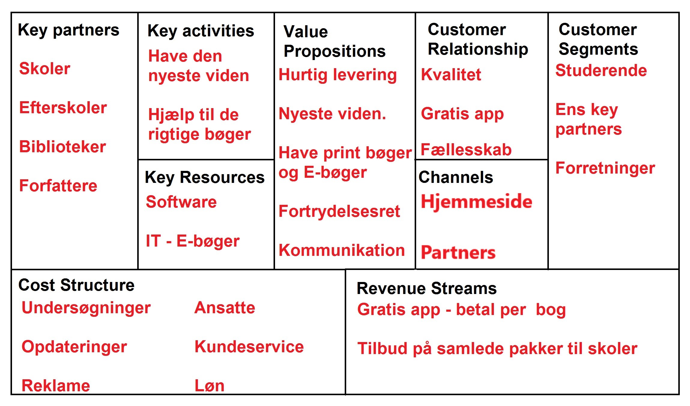

Denne metode bruges til udvikling og til beskrive en forretningsmodel for et projekt, eller en virksomhed.
Sammen med en klassekammerat udviklede vi en business model canvas, for et firma kaldet Factum Books, hvilket var det firma vi købte vores skolebøger fra.
Der er 9 felter i dette kanvas;
1. Key partners
Hvem er det man arbejder sammen med, og alle dem der har en tilknytning til firmaet.
2. Key activities
Hvilke elementer man skal have med i sin virksomhed, for at skabe værdier for kunderne.
3. Key resources
Hvilke resourcer man skal have, for at kunden får værdier ud af det.
4. Value propositions
Hvilken service man giver kunden, samt hvilke produkter der kan købes.
5. Customer relationship
Hvordan er forholdet mellem sælger og kunderne, og hvordan sikre man sige positivitet.
6. Channels
Hvordan får man sit produkt ud til kunden som rekalme.
7. Customer segments
Hvem er målgruppen.
8. Cost structure
Hvad koster de forskellige ting.
9. Revenue streams
På hvilken måde kommer man til at skaffe penge på ens produkt.
Her er et billede over et canvas vi lavede over Factum books

Kilder;
Factum Books:http://factumbooks.dk/